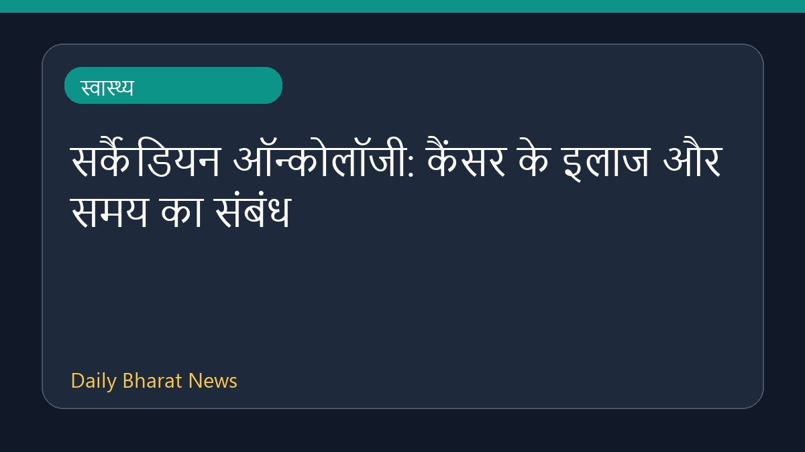
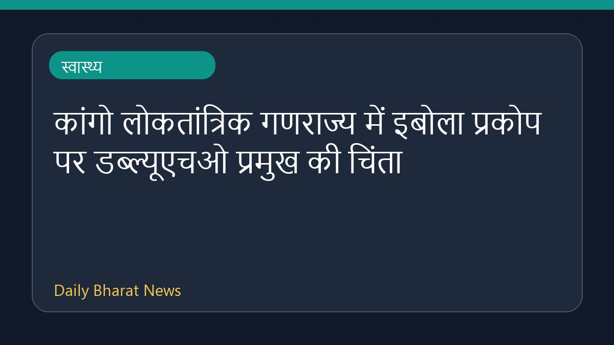
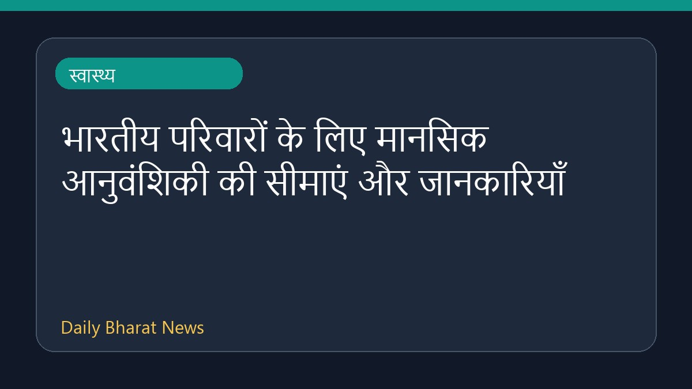

सर्कैडियन ऑन्कोलॉजी: कैंसर के इलाज और समय का संबंध

न्यूज-मेडिकल के अनुसार, सर्कैडियन ऑन्कोलॉजी पर चर्चा की गई है जिसमें कैंसर के इलाज के समय और रोगी के परिणामों के बीच के संबंधों को रेखांकित किया गया है। इस विषय में बताया गया है कि जैविक घड़ी और समय किस प्रकार कैंसर के उपचार को प्रभावित कर सकते हैं। इसके अलावा, इस क्षेत्र में हो रहे अध्ययनों से रोगियों के स्वास्थ्य परिणामों में सुधार की संभावनाओं पर भी प्रकाश डाला गया है। इस संबंध में उपलब्ध विवरण अभी सीमित हैं और आगे के शोध की आवश्यकता है।
मूल स्रोत: Health News Sources
Circadian Oncology: Timing, Cancer Treatment, and Patient Outcomes - News-Medical ↗
Circadian Oncology: Timing, Cancer Treatment, and Patient Outcomes - News-Medical ↗
संबंधित खबरें

स्वास्थ्यकांगो लोकतांत्रिक गणराज्य में इबोला प्रकोप पर डब्ल्यूएचओ प्रमुख की चिंता

स्वास्थ्यभारतीय परिवारों के लिए मानसिक आनुवंशिकी की सीमाएं और जानकारियाँ
 स्वास्थ्य
स्वास्थ्यधूम्रपान के अलावा अन्य कारण भी बढ़ाते हैं फेफड़े के कैंसर का जोखिम
 स्वास्थ्य
स्वास्थ्य